论文阅读：A Simple Framework for Contrastive Learning of Visual Representations
Framework
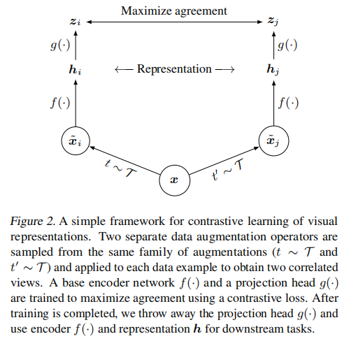- Data augmentation module
功能：生成一对正样本 $\widetilde{x}_i$，$\widetilde{x}_j$。
SimCLR 中数据增广模块顺序采用三个简单增广：随机裁剪后将大小 resize 为原来大小、随机颜色变换、随机高斯模糊。
论文中提到，随机裁剪和颜色变换的组合对性能有重要影响。
The combination of random crop and color distortion is crucial to achieve a good performance.
- Base encoder $f(\cdot)$
功能：从增广数据中提取 representation。
SimCLR 中允许多种网络结构的选择，没有任何限制。
论文中方便起见采用了 ResNet。
Our framework allows various choices of the network architecture without any constraints. We opt for simplicity and adopt the commonly used ResNet (He et al., 2016) to obtain $h_i=f(\widetilde x_i)=ResNet(\widetilde{x}_i)$ where $h_i \in \mathbb{R}^d$ is the output after the average pooling layer.
- Projection head $g(\cdot)$
功能：将 representations 映射到 对比损失 (contrastive loss) 的应用空间。
SimCLR 使用含一层隐藏层的 MLP (Multilayer Perceptron) 来获取 $z_i=g(h_i)=W^{(2)}\sigma (W^{(1)}h_i)$，这里 $\sigma$ 是非线性函数 ReLU。
论文中提到，在 $z_i$ 上定义 contrastive loss 比在 $h_i$ 上定义更有益。
We find it beneficial to define the contrastive loss on $z_i$’s rather than $h_i$’s.
- Contrastive loss function
功能：对比预测任务 (contrastive prediction task)
在给定一组包含正样本对 $\widetilde{x}_i$ 和 $\widetilde{x}_j$ 的点集 ${\widetilde{x}_k}$ 中，对比预测的任务是给定 $\widetilde{x}_i$，找出匹配的 $\widetilde{x}_j$。
SimCLR 中使用的 loss 被称作 NT-Xent (the normalized temperature-scaled cross entropy loss)，其表达式如下：
$$
\ell_{i,j}=-\log\frac{exp(sim(z_i,z_j)/\tau)}{\sum_{k=1}^{2N}\mathbb{1}_{[k\neq i]}exp(sim(z_i,z_k)/\tau)}.
$$
算法流程
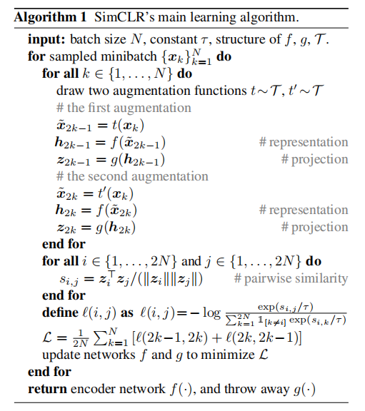评价方案 (Evaluation Protocol)
数据集和度量
SimCLR 中大多数无监督预训练工作使用 ImageNet ILSVRC-2012 数据集，还有一些其他的预训练实验，使用了 CIFAR-10数据集。
为了评价学习到的 representations，SimCLR 采用被广泛使用的评价方案：
在冻结的基础网络上训练线性分类器，并使用准确度作为 representation quality.
A linear classifier is trained on top of the frozen base network, and test accuracy is used as a proxy for representation quality.
默认设置
使用 ResNet-50 作为基础 encoder 网络，使用2层 MLP 映射头将 representation 映射到本征空间，使用 NT-Xent loss，LARS 优化器 (learning rate = 4.8 [0.3$\times$BatchSize/256]，weight decay = $10^{-6}$)。
采用 4096 的 batch size 训练 100 个 epoch，在首先10个 epoch 使用 linear warmup，学习率下降机制使用无重启的余弦下降。
Furthermore, we use linear warmup for the first 10 epochs, and decay the learning rate with the cosine decay schedule without restarts.
对于对比表示学习的数据增广
组合的数据增广操作对表示学习很重要
为了研究独立数据增广操作的影响和组合数据增广操作的重要性，SimCLR 研究者探究了独立数据增广操作下和成对数据增广操作下，SimCLR 框架的表现。
因为 ImageNet 数据集的图像具有不同的大小，在进行操作的时候总是会进行裁剪和 resize ，为了进行消融实验，SimCLR 研究者采用一种非对称的数据变换：总是先进行随机裁剪和 resize 操作，然后只在一个 branch 上再进行目标变换，从而达到对比目的。
独立或成对变换的线性估计结果如下图所示：
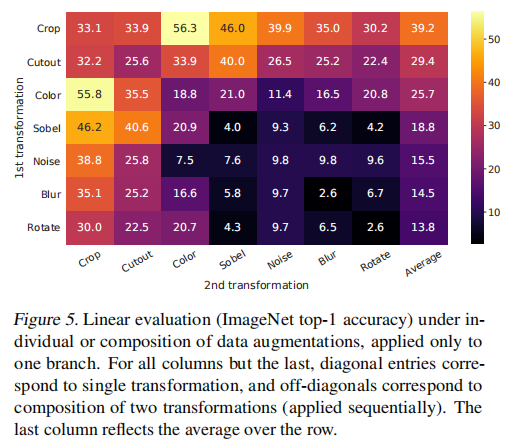由上图可以得出结论：没有一个单独的变换对表示学习来说是充分的。
No single transformation suffices to learn good representations.
同时可以看出，随机裁剪+随机颜色变化这一增广组合的效果更好。SimCLR 研究者认为对于同一张图片的随机裁剪的颜色分布是大致相同的，如下图所示。单单利用颜色分布就已经足够去辨别图像了，神经网络可能会利用这点来完成预测任务。所以，裁剪+颜色变换对于学习普遍特征来说是很重要的。
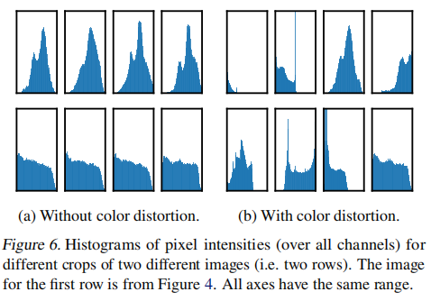We conjecture that one serious issue when using only random cropping as data augmentation is that most patches from an image share a similar color distribution. Neural nets may exploit this shortcut to solve the predictive task. Therefore, it is critical to compose cropping with color distortion in order to learn generalizable features.
对比学习比监督学习更需要 更强的数据增广
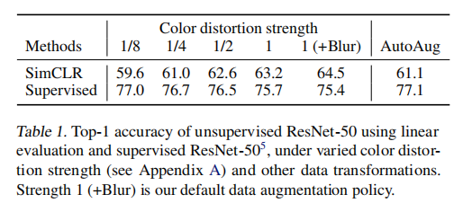如上表所示，颜色增广持续提升 SimCLR model 的效果，然而在 Supervised model 上，更强的数据增广反而会使模型的性能降低。
在这种情况下，AutoAugment (一种使用监督学习的增广策略) 不比简单裁剪+颜色变换的效果要好。
因此，无监督对比学习方法比监督学习需要更强的增广。
简单想法：监督学习方法存在过拟合，因此在更强的数据增广，也就是扰动的情况下，效果会降低。
Encoder 和 Head 的结构
无监督对比学习从大模型中收益更多
如下图所示，随着模型 size 的增加，有监督模型和无监督模型线性分类器的性能差距越来越小。
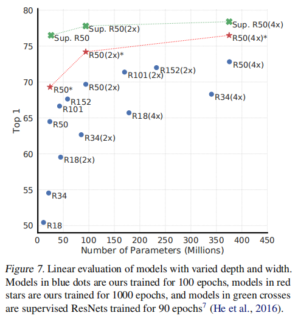Unsupervised learning benefits more from bigger models than its supervised counterpart.
非线性映射头提升它前一层的表示效果
A nonlinear projection head improves the representation quality of the layer before it.
为了研究映射头的重要性，SimCLR 研究者采用了三种不同的映射头结构
- 直接映射
- 线性映射 (Wu et al., 2018 中的方法，该方法已经被用于之前几个方法，比较可靠)
- 默认包含一层隐藏层 (和 ReLU 激活层) 的非线性映射 (和 Bachman et al., 2019 的方法类似)
从下图中可以观察到，非线性映射比线性映射要好 ($+3%$)，比没有映射要好得多 ($>10%$)。
当使用映射头的时候，即使不是在输出空间中，也有类似的情况。更进一步地说，使用非线性映射时，映射头的前一层 $h$ 依旧比后一层 $z=g(h)$ 要好得多 ($>10%$)。这说明映射头前面的隐藏层比之后的其他层的表示更好。
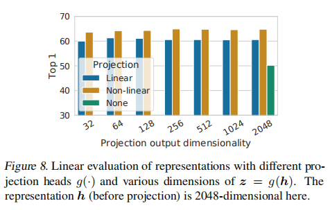The hidden layer before the projection head is a better representation than the layer after.
SimCLR 研究者认为在表示层前使用非线性映射的重要影响是因为由对比损失决定的信息损失。准确地说，$z=g(h)$ 移除了对于下游任务重要的某些信息，例如颜色和物件偏移。通过使用非线性变换 $g(\cdot)$，更多的信息可以被保存在 $h$ 层中。为了验证这个猜测，他们做了如下图的实验：
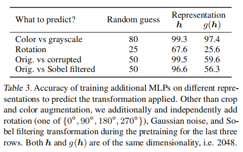实验表明，对于下游任务而言，$h$ 层确实比表示层保留的信息更多，实验效果更好。
损失函数和Batch Size
Loss function
SimCLR 研究者将 NT-Xent 和其他 loss 进行对比，如下表所示，NT-Xent 性能要好得多。
表内的 “sh” 指的是semi-hard negative mining。其他的一些 loss function 不根据负样本的 relative hardness 来给出权重，所以必须使用 semi-hard negative mining[3]。
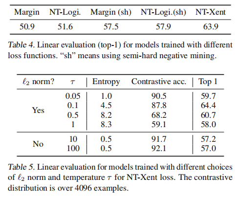之后 SimCLR 研究者测试了 $\ell_2$ normalization 的重要性 (也就是余弦相似度 vs 点乘) 和 NT-Xent loss 中的 temperature $\tau$ 的选择。结果如上表所示。
在没有 $\ell_2$ normalization 的条件下，对比任务的准确率更高，但是最终表示的效果更差。
更大的 batch sizes 和更多的 epochs 有益于对比学习
如下表所示，模型的效果随着 batch size 和 training epoch 的增加不断变好。
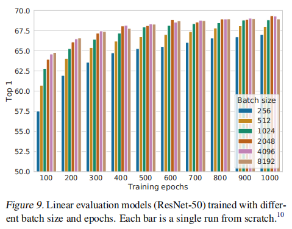在对比学习的过程中，更大的 batch size 和更多的 epoch 都意味着会有更多的负样本，因此会改善结果。
更大的 batch size 在每个 epoch 内会生成更多的负样本，而增加 epoch 相当于在每个 epoch 内会随机生成更多种类的负样本。
和 SOTA 的对比
SimCLR 研究者使用三种不同的隐藏的宽度 ($1\times,2\times,4\times$) 进行对比。
线性估计 (Linear evaluation)
比较结果如下图所示。
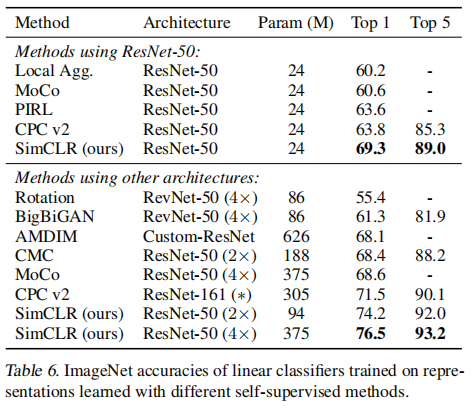半监督学习
SimCLR 使用标签数据集 ILSVRC-12 中训练集采样的 $1%$ 或 $10%$ 进行训练 (对应的每一类有 ~12.8，~128 张图片)。结果如下表所示：
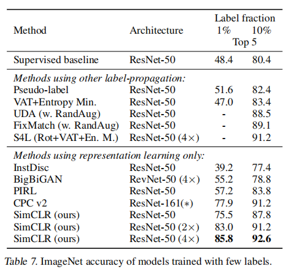结论
在这部分工作中，SimCLR 呈现了一个简单的框架和它进行对比视觉表示学习的实例。研究者仔细的研究了它的每个模块，展现了每个不同设计选择的影响。把这些发现结合起来，他们相当可观地提升了之前自监督，半监督和迁移学习方法的性能。
他们的方法和标准监督学习在 ImageNet 上数据增广的选择不同，在网络的最后使用了非线性映射头和对比 loss。这种简单框架的优秀说明了虽然最近人们比较感兴趣，但自监督学习的价值还是被低估了。